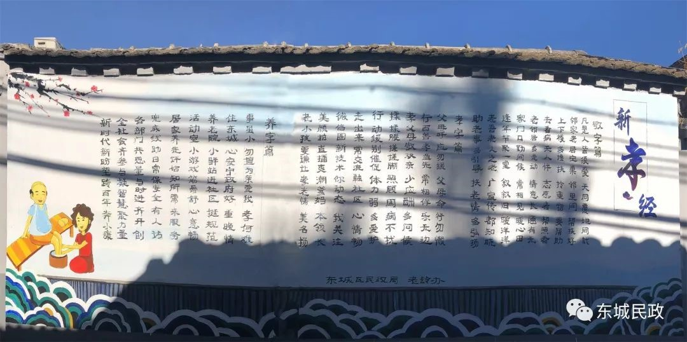
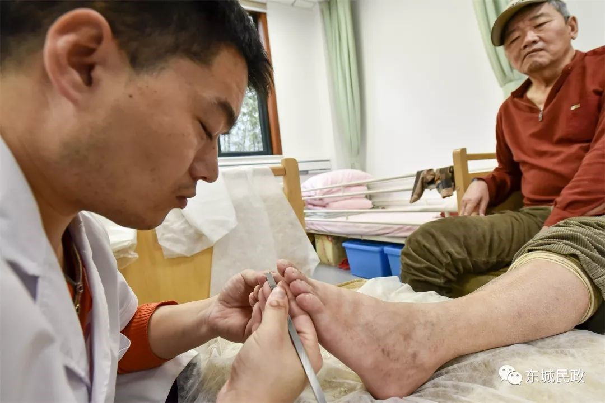
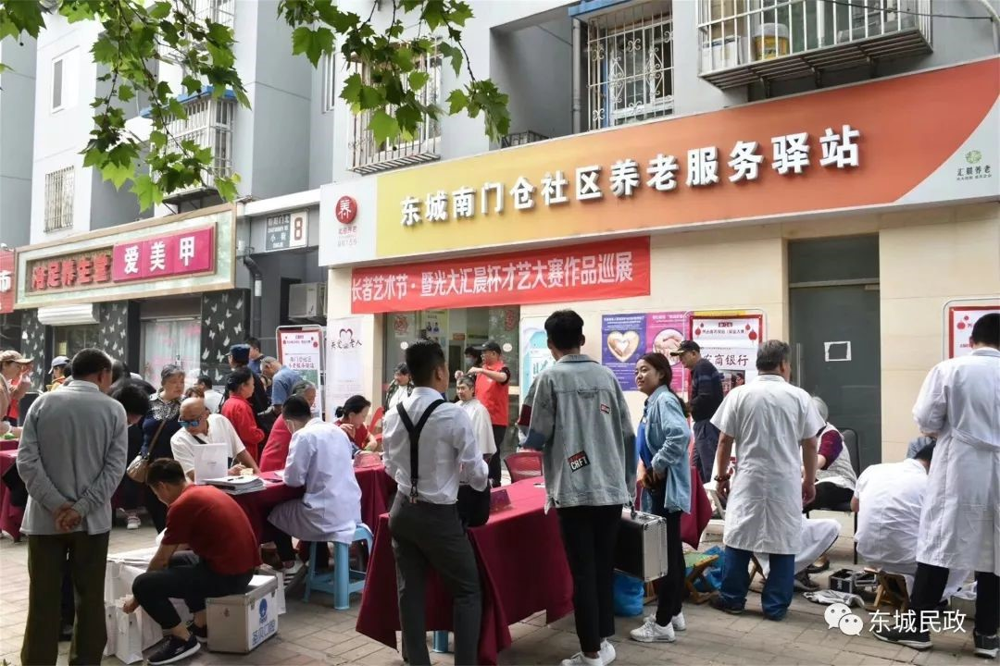
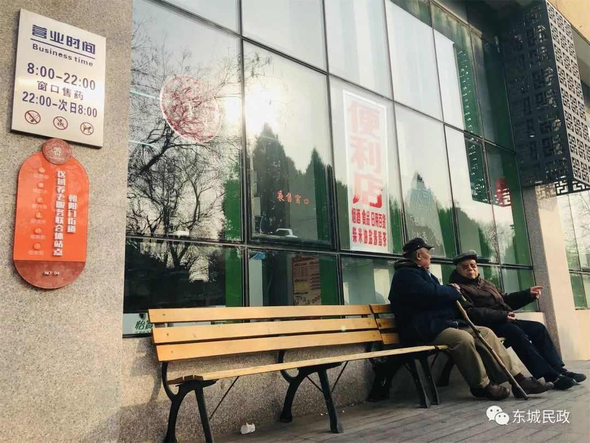
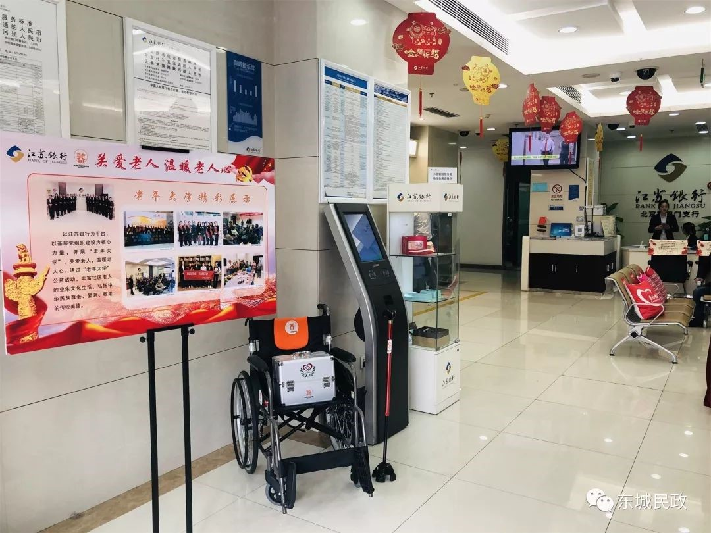
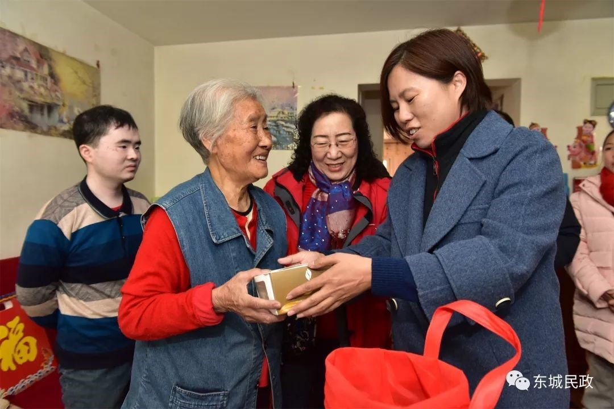
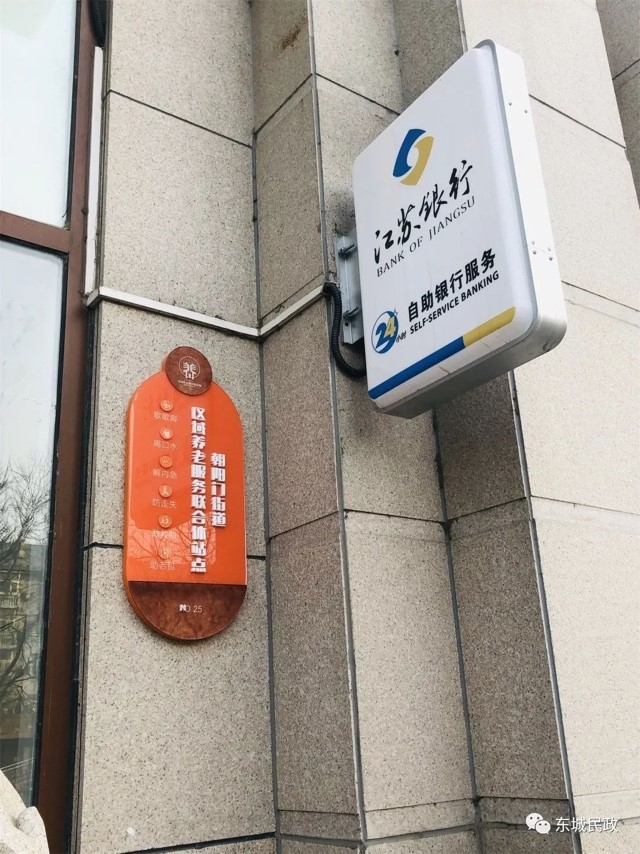

【实践探索】东城 社区养老服务驿站 明天会更好！
来源：东城民政
东城区 多举措推动社区养老服务驿站
建设运营的实践探索
为不断增强人民群众的获得感、幸福感，东城区深化“街道吹哨，部门报道”的工作机制，推动重心下移、职能下沉、资源延伸，加强对街道的政策支持、财力物力保障和设施建设指导，打通居家养老服务“最后一公里”。按照北京市总体部署，自2016年起建设社区养老服务驿站，根据老年人口分布及实际情况，制定《东城区社区养老服务驿站建设计划（2017年-2019年）》，2018年底，东城区完成三年建设规划任务，建设社区养老服务驿站51家。社区养老服务驿站作为老年人身边的供需对接平台、老年服务平台、服务资源链接平台、社区服务居民平台，充分发挥“四个平台”作用，及时响应老年人周边、身边、床边的“三边”服务需求。
1、东城区推动社区养老服务驿站建设运营主要做法及成效
加大政府投入保障力度，夯实三级体系建设基础。
深化政策措施保障。以《东城区关于加强居家养老服务工作的实施意见》（京东发〔2016〕9号）为总纲，按照“三级五方联动，分类精准供给”的居家养老服务工作要求，围绕托底老年人服务保障、基础设施建设、社会力量参与等方面，在全市率先出台了《东城区街道社区养老服务驿站租金补助管理暂行办法》、《东城区关于多元主体参与居家养老服务工作的实施意见》等指导性文件，完善区级政策体系。优化项目审批流程。制定出台《东城区社区养老服务驿站（示范站）建设资金拨付管理办法》，对在医养结合等方面具有探索突破的社区养老服务驿站项目，采取“政府有补助、运营商有投入”的支持方式，对装修改造部分资金给予80%的一次性资助。加大财力物力支持。结合“疏解整治促提升”专项行动，大力推动腾退空间用于补齐民生短板，全区51家养老驿站中10家为“疏整促”房屋资源，总面积3795平米。
加强规范化品牌化建设，推动可持续运营和发展。
建立区级社区养老服务驿站运营商目录库。按照街道与运营商双向互选的原则，建立区级运营商目录库,10家专业运营商落地东城,包括市属国企北京诚和敬驿站养老服务有限公司、专业机构北京慈爱嘉养老服务有限公司、区级社会组织小棉袄爱老居家养老服务中心，实现驿站运营专业化。强化项目建设前期审核评估。修订完善了《东城区社区养老服务驿站设计导则》，制定驿站装修装饰、设备购置“反向目录”，明确室内基本装修及设备购置两方面限制购买目录，进一步规范了驿站建设资金使用。规范社区养老服务驿站服务项目价格。履行政府“保基本、兜底线”的职能，政府无偿提供驿站场地设施，同时，要求养老驿站服务单价低于市场平均价格，并在站内公示服务内容、服务时长、小时单价。
立足老年人实际需求，搭建综合性便民服务平台。
建立开放式管理服务体系。要求各社区养老驿站同类别服务项目有不少于3家供给资源，供老年人自主选择，驿站运营商对所链接服务资源进行监督管理，保障服务质量安全。建立区级居家照护服务商目录库。目前，包括养老驿站在内的居家照护服务商共92家，能够提供医疗护理、康复护理、慢病管理、健康指导、日间托老、生活起居、餐饮配送7大类170项服务。拓展丰富服务项目内容。鼓励驿站运营商开设个性化服务项目，如老年旅游、老年金融服务，回应广大普惠老年人的服务需求。引导养老驿站主动挖掘需求、主动对接服务、主动接受监督，推动可持续运营发展。
政府履行监管职能，打造“互联网+市场监管”模式。
用好市场监管指标考核体系。优化养老驿站运营监管指标体系，包括政府监管抽查、社区自治组织监督巡查、第三方专业组织暗访、服务对象满意度调查及驿站运营商自评五个维度，多元共建共治共享，让老年人成为养老服务的“阅卷人”“打分人”。用好区级养老信息平台。运用信息化手段提高供给与需求匹配度，横向整合区老龄委各部门相关数据，实现数据共享应用。加强服务信息数据过程管理，以实际发生的服务流量为考核依据，做到“按单付费”的精准补贴。
东城区推动社区养老服务驿站建设运营中应避免哪些问题
把正养老驿站方向作为服务平台的定位初衷不能变
在政府“放水养鱼”的政策红利刺激下，一些养老企业容易进行“跑马圈地”，以养老驿站作为市场要素开展商业运作，淡化了驿站作为老年人的服务平台的原有功能定位。同时，一些小微企业以“养老驿站”为媒介推动自身发展，过度依赖政府“输血”。
充分提升养老驿站场地资源使用效率
大力提升东城区养老驿站使用效率，目前使用效率较高的驿站面积均在200平米左右。驿站在运营中也加入了“聚人气”类活动，在粘性培养工作中还应该下大力气。
加大“驿站”与“社区”融入
养老驿站作为新生事物，大多数以福利主体或市场主体形式出现，着重对接在街道层面，要下沉和融入社区，多与社区居委会互动沟通，注重社区级服务平台的定位与初衷。在驿站承接社区公益金项目上加大主动思考、主动经营意识，避免“为了做项目而做项目”现象。
调整“驿站服务”嵌入“居民生活”情况
养老驿站作为服务型业态，要避免嵌入过度，成为老年人各类问题“全能保姆”；同时也要注意嵌入不足，成为“类商店化”业态，游离于居民日常生活之外。东城区正在推行社区居委会全响应服务制度，驿站工作可以由部分实行转为深度推进。少部分站点的营业时段为“朝九晚六”“五个工作日”，作为服务行业或是老人身边的服务平台，远远不能够满足实际需求。
推动社区养老服务驿站建设运营的思考
贯彻落实“七有”要求，满足市民“五性”需求，加快构建“民有所呼、我有所应”的养老服务保障体系，按需加密养老驿站建设，强化服务质量提升，持续优化养老服务布局，在“周边”服务上下功夫、在“身边”服务上谋发展、在“床边”服务上求实效。
统筹整合区域养老驿站资源
推动养老服务市场优胜劣汰，逐步实现“一街道一运营商”的运营布局，构建“条块结合、区域统筹”的服务业态。在区域内统筹多家养老驿站资源，有侧重的开展特色服务，由辖区内400平米以上的驿站统一承接日间照料服务功能，做好转介接送服务，推动区域集约化、高效化运营发展，助力实现“一站一特色”的区域性养老服务业态。
推广东四街道“驿站大集”工作方法
发挥“链接”作用。优化养老驿站自身的资源投入结构，链接服务资源，丰富服务种类，摆脱“全能保姆”的困境，集中资源聚焦特色和品牌服务项目。发挥“连接”作用。以养老驿站为平台，居民直接面向各类服务进行选择，驿站从中介位置转变为信息提供者和“把关人”，以市场机制优化服务项目供给。发挥“联结”作用。依托“驿站大集”构建地域共同体，引导驿站、企业、居民各方之间构建起邻里关系、消费者关系等关系网络，形成文化共同体，使驿站融入社区、驿站服务融入居民生活。
复制朝阳门街道“区域养老服务联合体
街道办事处作为社会治理“牵头人”“组织者”，运用“模块化”思维，将辖区各类生活服务业态与养老服务建立联系，打造“一轴两核多点”的养老服务生态圈。坚持党建引领，构建以街道办事处为主体的资源整合服务轴，以养老照料中心、养老驿站为两个核心服务平台，动员区域内多种类型服务资源组建养老服务联合体，提供由点及面的区域整体服务。社区营造推动多元参与，在辖区内营造敬老孝老社会氛围，“联合体”成员单位根据自身的业务优势为老人就近提供精准服务，培育辖区内老年志愿服务组织，开展“低龄助高龄”的一对一志愿帮扶。
   加强对养老驿站服务运营的延伸监管
鼓励养老驿站结合辖区特色开发新项目、新产品，通过“政府购买”撬动“社会资本”，充分发挥市场机制作用，推动养老驿站的可持续运营。同时，加快推动监管维度“质”的升级，不流于对“看得见”的服务的监管，更加注重“看不见”的链接服务的监管，建立社区养老驿站作为服务“第一责任人”的服务保障机制，为老年人筑牢服务保障“安全屏”。